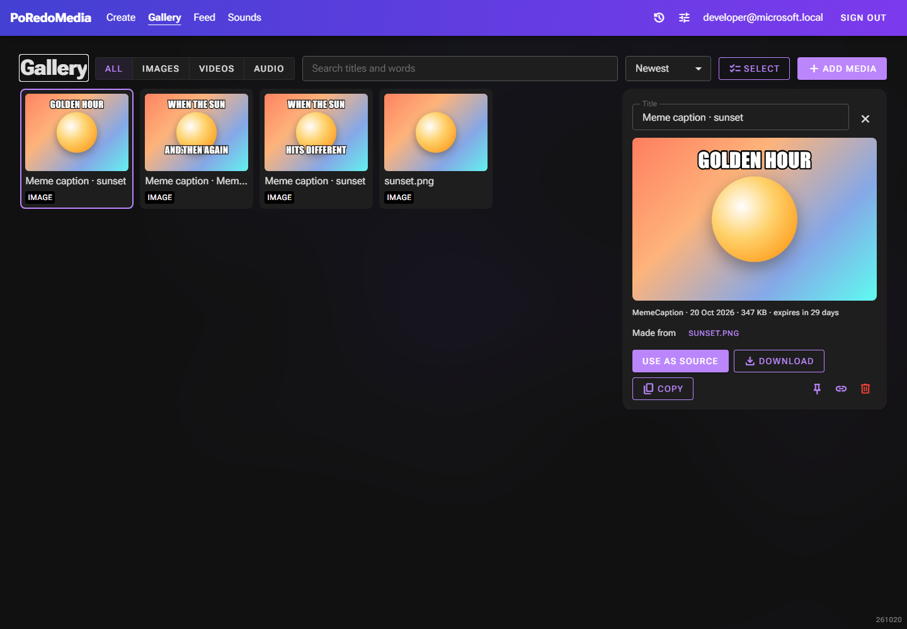
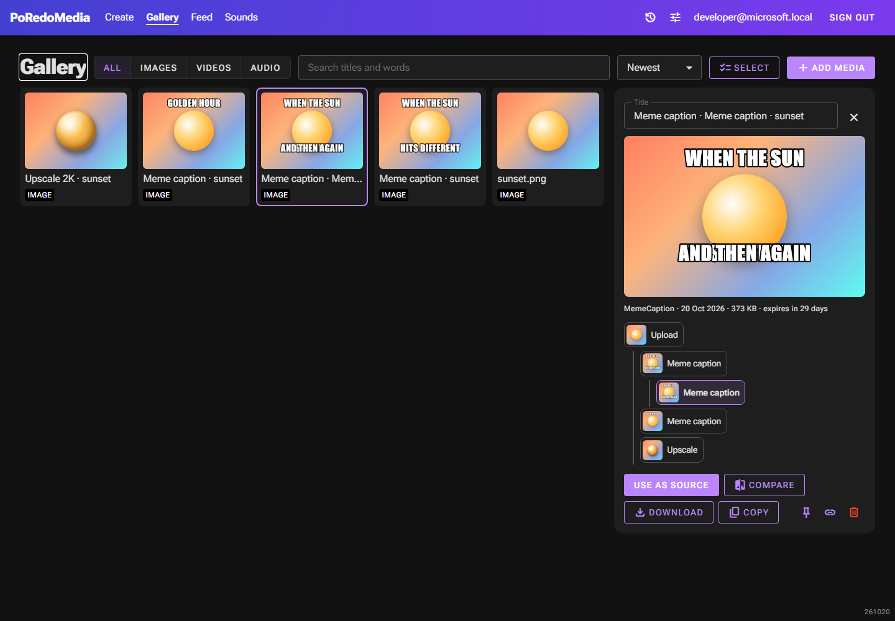
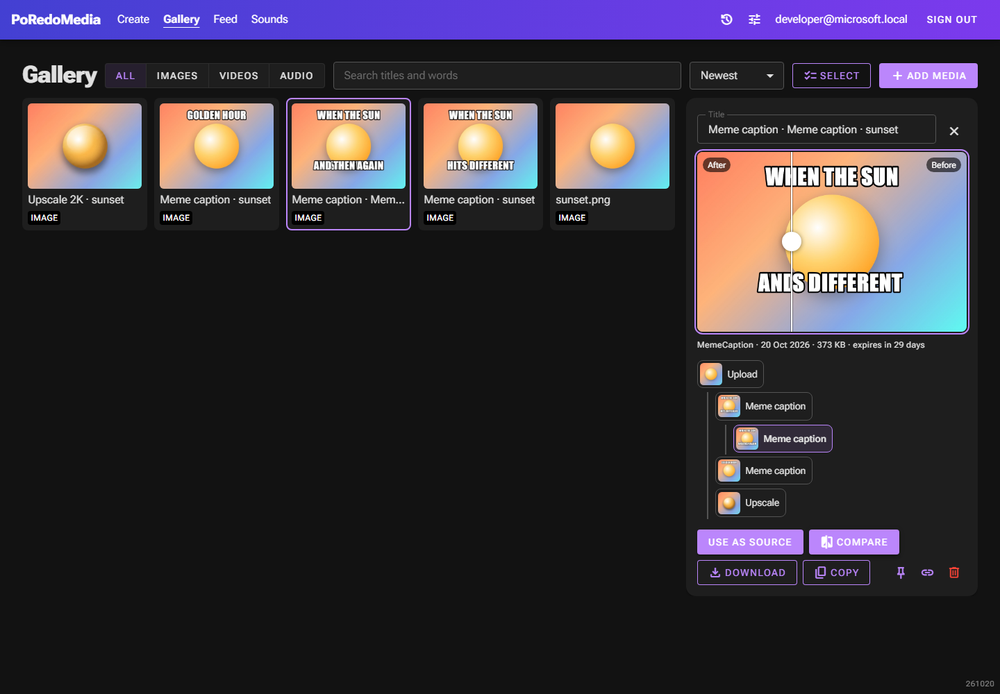
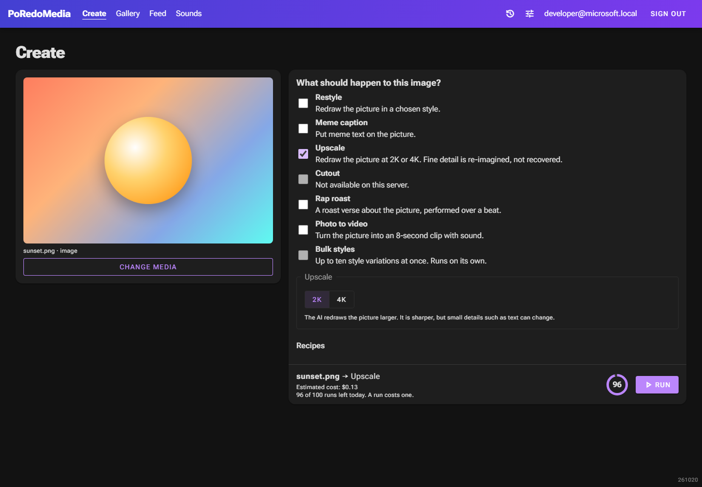

Version tree, before/after compare, and Upscale / Cutout
Gallery detail panel and Create page, 20 Oct 2026. Red dashed = what was there before. Green = new.
1. Gallery detail: lineage

Only the parent, no siblings or children

Version tree: upload at the root, open item highlighted, click to open any
Compare (C)
- The tree is built from the gallery list the page already has; no new API call.
- Compare shows only when the item and its parent are both pictures.
2. Compare: before/after slider

Result left of the handle, parent right; a plain range input underneath, so no script
Filled while on
3. Create: two new image functions

New: Upscale (Gemini 3 Pro Image, 2K or 4K)
New: Cutout (greyed until the Hugging Face key is set)
Upscale options: 2K or 4K, with an honest warning
Cost estimate includes them
- Before, the list had five image functions: Restyle, Meme caption, Rap roast, Photo to video, Bulk styles. Nothing else on the page changed.
- With Cutout ticked, a switch (on by default) also makes a 512 px WebP sticker with a white outline.